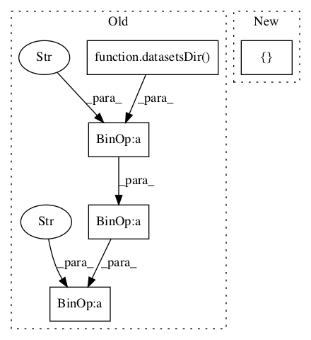

Pattern ID :234

Before Change
class ConfusionMatrixTestCase(unittest.TestCase):
def setUp(self):
weather = format.C45_FORMAT.get_klass(datasetsDir(self) + "minigolf" + SEP + "weather")
self.c = cm.ConfusionMatrix(weather)
self.pos = "yes"
self.neg = "no"
After Change
class ConfusionMatrixTestCase(unittest.TestCase):
def setUp(self):
self.c = cm.ConfusionMatrix(["yes", "no"])
self.pos = "yes"
self.neg = "no"
In pattern: SUPERPATTERN
Frequency: 3
Non-data size: 5
Instances
Fragment ID: 376708
Project Name: nltk/nltk
Commit Name: 56d7c00d9aecc8f2b092c393cbe657a147e9b592
Time: 2007-06-09
Author: sumukh.ghodke@gmail.com
File Name: nltk_lite/contrib/classifier_tests/confusionmatrixtests.py
Class Name: ConfusionMatrixTestCase
Method Name: setUp
Fragment ID: 376711
Project Name: nltk/nltk
Commit Name: fe9049765c57e8c872b3ae52df9f41100e9beb7d
Time: 2007-04-24
Author: sumukh.ghodke@gmail.com
File Name: nltk_lite/contrib/classifier_tests/instancestests.py
Class Name: InstancesTestCase
Method Name: test_breakpoints_in_class_membership
Fragment ID: 376705
Project Name: nltk/nltk
Commit Name: 096ed35c13c1b0856e5785e2fad9aa2cb807b52a
Time: 2007-04-22
Author: sumukh.ghodke@gmail.com
File Name: nltk_lite/contrib/classifier_tests/instancestests.py
Class Name: InstancesTestCase
Method Name: test_the_number_of_instances